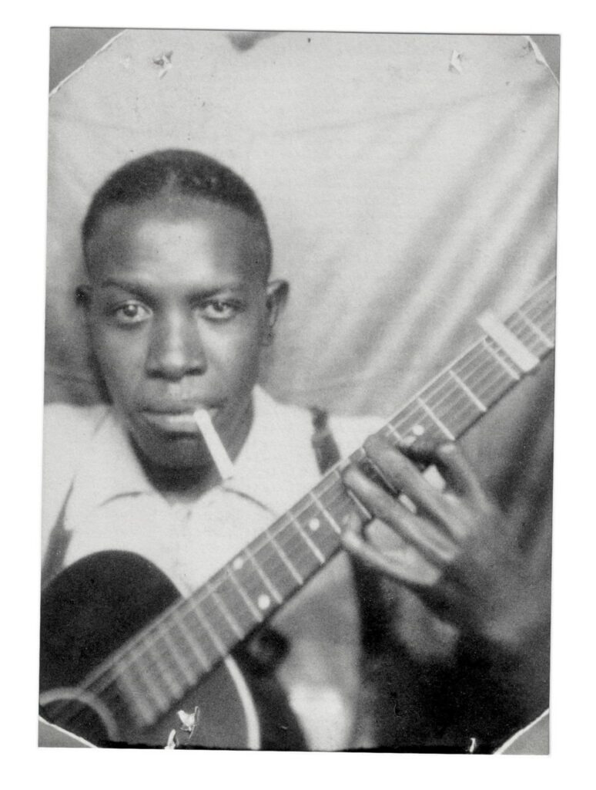
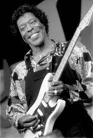

Box um
Robert Johson
Robert Leroy Johnson foi um cantor, compositor e guitarrista norte-americano de blues. Johnson é um dos músicos mais influentes do Mississippi Delta Blues e é uma importante referência para a padronização do consagrado formato de doze compassos para o blues
Box dois
Buddy Guy
George "Buddy" Guy é um guitarrista e cantor norte-americano de blues e rock. Conhecido por servir de inspiração para Jimi Hendrix e outras lendas dos anos 60, Guy é considerado um importante expoente do chamado Chicago blues, tornado famoso por Muddy Waters e Howlin' Wolf.
Box três

B.B King
Riley Ben King, mais conhecido como B. B. King, foi um guitarrista de blues, compositor e cantor estadunidense. O "B. B." em seu nome significa Blues Boy, seu pseudônimo como moderador na rádio W.
Box quatro

Howlin' Wolf
Chester Arthur Burnett, mais conhecido como Howlin' Wolf foi um importante cantor, compositor e guitarrista de blues. Com uma voz rouca e alta e um físico avantajado, Wolf é um dos mais significativos cantores de blues clássico de Chicago.